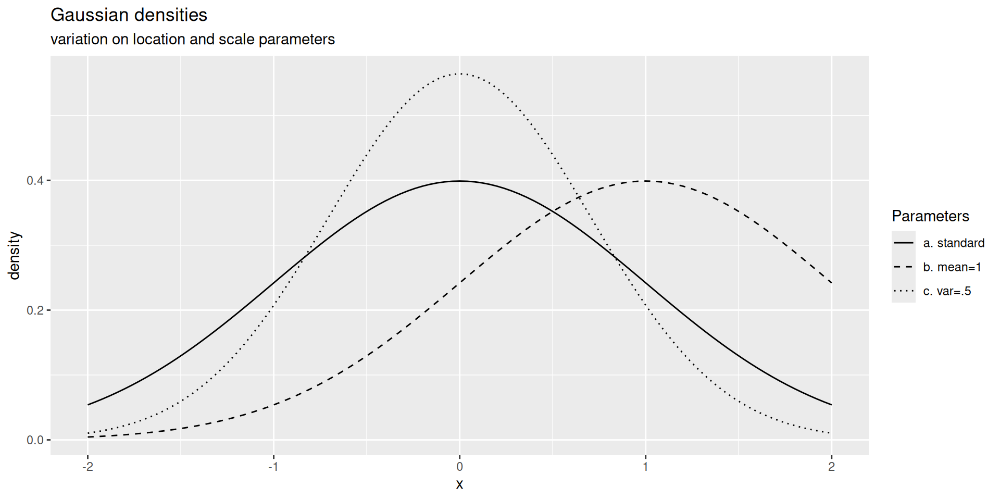

Probability XIII: Gaussian Vectors
2026-10-18
Univariate Gaussian distribution
The standard Gaussian distribution
- Density
\[\phi(x) = \frac{\mathrm{e}^{- \frac{x^2}{2} }}{\sqrt{2 \pi}}\]
- cumulative distribution function
\[\Phi(x) = \int_{-\infty}^x \phi(t) \mathrm{d}t\]
- survival function
\[\overline{\Phi}(x) = 1- \Phi(x) = \int_x^{\infty} \phi(t) \mathrm{d}t\]
\(\mathcal{N} (0, 1)\) (expectation \(0\), variance \(1\)) denotes the standard Gaussian probability distribution, that is the probability distribution defined by density \(\phi\)
Affine transformation of standard Gaussians
Any affine transform of a standard Gaussian random variable is distributed according to a univariate Gaussian distribution
If \(X \sim \mathcal{N} (0, 1)\) then
\(\sigma X + \mu \sim \mathcal{N} \left( \mu, \sigma^2 \right)\)
with density: \(\frac{1}{\sigma}\phi\left(\frac{\cdot- \mu}{\sigma}\right)\)
with CDF: \(\Phi\left(\frac{\cdot - \mu}{\sigma}\right)\)
Gaussian densities graphs

Gaussian densities graphs (continued)

Stein’s identity
The standard Gaussian distribution is characterized by the next identity.
Theorem 1 (Stein’s identity) Let \(X \sim \mathcal{N}(0,1)\),
let \(g\) be an absolutely continuous function with derivative \(g'\) such that \(\mathbb{E}[ |X g(X)|]<\infty\),
then
\(g'(X)\) is integrable and
\[\mathbb{E}[g'(X)] = \mathbb{E}[Xg(X)] \, .\]
Proof of Stein’s identity
Proof. The proof relies on integration by parts (IPP).
First note that replacing \(g\) by \(g - g(0)\) changes neither \(g'\), nor \(\mathbb{E}[Xg(X)]\).
We may assume that \(g(0)=0\).
\[\begin{array}{rl} \mathbb{E}[Xg(X)] & = \int_{\mathbb{R}} xg(x) \phi(x) \mathrm{d}x \\& = \int_0^\infty xg(x) \phi(x) \mathrm{d}x + \int_{-\infty}^0 xg(x) \phi(x) \mathrm{d}x \\& = \int_0^\infty x \int_0^\infty g'(y) \mathbb{I}_{y\leq x}\mathrm{d}y \phi(x) \mathrm{d}x -\int^0_{-\infty} x \int^0_{-\infty} g'(y) \mathbb{I}_{y\geq x}\mathrm{d}y \phi(x) \mathrm{d}x\\& = \int_0^\infty g'(y) \int_0^\infty \mathbb{I}_{y\leq x} x\phi(x)\mathrm{d}x \mathrm{d}y -\int_{-\infty}^0 g'(y) \int^0_{-\infty} x \phi(x)\mathbb{I}_{y\geq x}\mathrm{d}x \mathrm{d}y \\& = \int_0^\infty g'(y) \int_y^\infty x\phi(x)\mathrm{d}x \mathrm{d}y - \int_{-\infty}^0 g'(y) \int^y_{-\infty} x \phi(x)\mathrm{d}x \mathrm{d}y \\& = \int_0^\infty g'(y) \phi(y) \mathrm{d}y - \int_{-\infty}^0 - g'(y) \phi(y)\mathrm{d}y \\& = \int_{-\infty}^\infty g'(y) \phi(y) \mathrm{d}y\end{array}\]
The last inequality is justified by Tonelli-Fubini’s Theorem. Then, we rely on \(\phi'(x)=-x \phi(x)\).
The characteristic function is a very efficient tool for studying Gaussians
Proposition 1 The characteristic function is a very efficient tool when handling Gaussian distributions.
The characteristic function of \(\mathcal{N}(\mu,\sigma^2)\) is
\[\widehat{\Phi}(t) = \mathbb{E}\left[\mathrm{e}^{\imath t X}\right] = \mathrm{e}^{\imath t \mu - \frac{t^2 \sigma^2}{2}}\]
Proof
Proof. It is enough to check the proposition for \(\mathcal{N}(0,1)\). As \(\phi\) is even,
\[\begin{array}{rcl}\widehat{\Phi}(t) &= & \int_{-\infty}^{\infty} \mathrm{e}^{\imath t x} \frac{\mathrm{e}^{- \frac{x^2}{2}}}{\sqrt{2 \pi}} \mathrm{d} x \\& = & \int_{-\infty}^{\infty} \cos(tx) \frac{\mathrm{e}^{- \frac{x^2}{2}}}{\sqrt{2 \pi}} \mathrm{d} x\end{array}\]
Derivation with respect to \(t\), interchanging derivation and expectation (why can we do that?)
\[\begin{array}{rcl}\widehat{\Phi}'(t) & = & \int_{-\infty}^{\infty} -x \sin(tx) \frac{\mathrm{e}^{- \frac{x^2}{2}}}{\sqrt{2 \pi}} \mathrm{d} x\end{array}\]
Proof (continued)
Proof (continued). Now relying on Stein’s Identity with \(g(x)=-\sin(tx)\) and \(g'(x)=-t\cos(tx)\)
\[\begin{array}{rcl}\widehat{\Phi}'(t) & = & - t \int_{-\infty}^{\infty} \cos(tx) \phi(x) \mathrm{d} x \\ & = & -t \widehat{\Phi}(t)\end{array}\]
We immediately get \(\widehat{\Phi}(0)=1\), and solving the differential equation leads to
\[\log \widehat{\Phi}(t) = - \frac{t^2}{2}\]
Stein’s Lemma (bis)
The fact that the characteristic function completely defines the probability distribution provides us with a converse of Stein’s Lemma.
Lemma 1 (Stein’s Lemma (bis)) Let \(X\) be a real-valued random variable on some probability space.
If, for any differentialle function \(g\) such that \(g'\) and \(x \mapsto xg(x)\) are integrable, the following holds
\[\mathbb{E}[g'(X)] = \mathbb{E}[X g(X)]\]
then the distribution of \(X\) is standard Gaussian.
Proof
Proof. Consider the real \(\widehat{F}\) and the imaginary part \(\widehat{G}\) of the characteristic function of the distribution of \(X\).
The identity entails that
\[\widehat{F}'(t) = -t \widehat{F}(t) \quad \text{and} \quad \widehat{G}'(t) = -t \widehat{G}(t)\]
with \(\widehat{F}(0)=1\) and \(\widehat{G}(0)=0\)
Solving the two differential equations leads to \(\widehat{F}(t) = \mathrm{e}^{-t^2/2}\) and \(\widehat{G}(t)=0\)
We just checked that the characteristic function of the distribution of \(X\) is the characteristic function of \(\mathcal{N}(0,1)\)
Sum of independent Gaussian random variables
The sum of two independent Gaussian random variables is a Gaussian random variable
Proposition 2 If \(X\) and \(Y\) are two independent random variables distributed according to \(\mathcal{N} (\mu, \sigma^2)\) and \(\mathcal{N} (\mu', \sigma^{\prime 2})\)
then
\[X + Y \sim \mathcal{N} \left(\mu + \mu', \sigma^2 + \sigma^{\prime 2}\right)\]
Exercise 1 (Check it.) Check it.
Moment generating function
\[s \mapsto \mathbb{E} \left[ \mathrm{e}^{s X} \right] = \text{e}^{\frac{s^2}{2}}\]
Exercise 2 (Check it.) Check it.
Exercise 3 (Derive tail bounds.) Derive tail bounds.
Mill’s ratios
Proposition 3 (Mill’s ratios) For \(x \geq 0,\)
\[\frac{\phi(x)}{x} \left( 1 - \frac{1}{x^2} \right) \leq \overline{\Phi} (x) \leq \min \left( \mathrm{e}^{-\frac{x^2}{2}}, \frac{\phi(x)}{x} \right)\]
Proof
Proof. The proof boils down to repeated integration by parts.
\[\begin{array}{rcl} \overline{\Phi}(x) & = & \int_x^{\infty} \frac{1}{ \sqrt{2 \pi}} \mathrm{e}^{- \frac{u^2}{2}} \mathrm{d} u\\ & = & \left[ - \frac{1}{ \sqrt{2 \pi} u} \mathrm{e}^{- \frac{u^2}{2}} \right]^{\infty}_x - \int_x^{\infty} \frac{1}{ \sqrt{2 \pi}} \frac{1}{u^2} \mathrm{e}^{- \frac{u^2}{2}} \mathrm{d} u\end{array}\]
As the second term is non-positive,
\[\overline{\Phi}(x)\leq \left[ - \frac{1}{ \sqrt{2 \pi} u} \mathrm{e}^{- \frac{u^2}{2}} \right]^{\infty}_x = \frac{\phi(x)}{x}\]
This is the first part of the right-hand inequality, the other part comes from Markov’s inequality.
Proof (continued)
For the left-hand inequality, we have to upper bound
\[\int_x^{\infty} \frac{1}{ \sqrt{2 \pi}} \frac{1}{u^2} \mathrm{e}^{- \frac{u^2}{2}} \mathrm{d} u\]
\[\begin{array}{rcl} \int_x^{\infty} \frac{1}{ \sqrt{2 \pi}} \frac{1}{u^2} \mathrm{e}^{- \frac{u^2}{2}} \mathrm{d} u & = & \left[ \frac{- 1}{ \sqrt{2 \pi}} \frac{1}{u^3} \mathrm{e}^{- \frac{u^2}{2}} \right]_x^{\infty} - \int_x^{\infty} \frac{1}{ \sqrt{2 \pi}} \frac{3}{u^4} \mathrm{e}^{-\frac{u^2}{2}} \mathrm{d} u\\ & \leq & \frac{1}{ \sqrt{2 \pi}} \frac{1}{x^3} \mathrm{e}^{- \frac{x^2}{2}}\end{array}\]
Moments
Proposition 4 (Gaussian Moments) For a standard Gaussian random variable,
\[\mathbb{E} \left[ X^k \right] = \begin{cases} 0 & \text{ if } k \text{ is odd}\\ \frac{k!}{2^{k / 2} (k / 2) !} = \frac{\Gamma (k + 1)}{2^{k / 2} \Gamma (k / 2 + 1)} & \text{ if } k \text{ is even.}\end{cases}\]
Proof
Proof. Thanks to distributional symmetry, \(\mathbb{E} \left[ X^k \right]=0\) for all odd \(k\).
We handle even powers using integration by parts:
\[\begin{array}{rcl} \mathbb{E} \left[ X^{k+2} \right] & = & (k+1) \mathbb{E} \left[ X^{k} \right]\end{array}\]
Induction on \(k\) leads to,
\[\begin{array}{rcl} \mathbb{E} \left[ X^{2k} \right] &= & \prod_{j=1}^k (2j-1) = \frac{(2k) !}{2^k k! }\end{array}\]
Note
Note that \((2k)!/(2^k k!)\) is also the number of partitions of \(\{1, \ldots, 2k\}\) into subsets of cardinality \(2\).
Skewness and kurtosis
The skewness is null,
the kurtosis (ratio of fourth centred moment over squared variance) equals \(3\):
\[\mathbb{E}[X^4] = 3 \times \mathbb{E}[X^2]^2\]
Gaussian vectors
Gaussian vector
A Gaussian vector is a collection of univariate Gaussian random variables that satisfies a very stringent property
Definition 1 (Gaussian vector) A random vector \(X = (X_1, \ldots, X_n)^\top\) is a Gaussian vector
iff
for any real vector \(\lambda = (\lambda_1, \lambda_2, \ldots, \lambda_n)^\top\), the distribution of the univariate random variable
\[\langle \lambda, X\rangle = \sum_{i = 1}^n \ \lambda_i X_i\]
is Gaussian.
Caution!
Warning
Not every collection of Gaussian random variables forms a Gaussian vector.
The random vector \((X, \epsilon X)\) with \(X \sim \mathcal{N}(0.1)\), independent of \(\epsilon\) which is worth \(\pm 1\) with probability \(1/2\), is not a Gaussian vector although both \(X\) and \(\epsilon X\) are univariate Gaussian random variables.
Exercise 4 (Check that \(\epsilon X\) is a Gaussian random variable.) Check that \(\epsilon X\) is a Gaussian random variable.
Yet there are Gaussian vectors!
Proposition 5 If \(X_1, \ldots, X_n\) is a sequence of independent Gaussian random variables,
then
\[(X_1, \ldots, X_n)^\top = \begin{pmatrix}X_1 \\ \vdots \\ X_n\end{pmatrix}\]
is a Gaussian vector.
Convention
In the sequel, a standard Gaussian vector is a random vector with independent coordinates with each coordinate distributed according to \(\mathcal{N}(0,1)\).
Understanding Gaussian vectors
Before this, let us check that the joint distribution of a Gaussian random vector is completely characterized by its covariance matrix and its expectation vector.
Covariance of a random vector
Recall that the covariance of random vector \(X= (X_1, \ldots, X_n)^\top\) is the matrix \(K\) with dimension \(n \times n\) with coefficients
\[K [i, j] = \operatorname{Cov} (X_i, X_j) = \mathbb{E} [X_i X_j] - \mathbb{E} [X_i] \mathbb{E} [X_j] .\]
Without loss of generality, we may assume that random vector \(X\) is centered
For every \(\lambda = (\lambda_1, \ldots, \lambda_n)^\top \in \mathbb{R}^n\), we have:
\[\operatorname{var}(\langle \lambda, X \rangle) = \lambda^\top K \lambda = \text{trace} (K \lambda \lambda^\top)\,\]
this is does not depend on any Gaussianity assumption
Indeed,
\[ \begin{array}{rcl} \operatorname{var}(\langle \lambda, X \rangle) & = & \mathbb{E} \left[ \left( \sum_{i=1}^n \lambda_i X_i\right)^2\right] \\ & = & \sum_{i,j=1}^n \mathbb{E} \left[\lambda_i \lambda_j X_i X_j \right] \\ & = & \sum_{i,j=1}^n \lambda_i \lambda_j K[i,j] \\ & = & \lambda^\top K \lambda\end{array} \]
The characteristic function of a Gaussian vector \(X\) with expectation vector \(\mu\) and covariance \(K\) satisfies
\[\mathbb{E} \mathrm{e}^{\imath \langle \lambda, X \rangle } = \mathrm{e}^{\imath \langle \lambda, \mu \rangle - \frac{\lambda^\top K \lambda}{2}}\]
A linear transform of a Gaussian vector is a Gaussian vector.
Proposition 6 If \({Y} = (Y_1, \ldots, Y_n)^\top\) is a Gaussian vector with covariance \(K\) and \(A\) a real matrix with dimensions \(p \times n\), then \(A \times Y\) is Gaussian vector with expectation \(A \times \mathbb{E}Y\) and covariance matrix
\[A K A^\top\]
Proof
Proof. Without loss of generality, we assume \(Y\) is centred.
For any \(\lambda \in \mathbb{R}^p\),
\[\langle \lambda , A Y \rangle = \langle A^\top \lambda, Y \rangle\]
thus \(A \times Y\) is Gaussian with variance
\[\lambda^\top A K A^\top \lambda\]
The covariance of \(A \times Y\) is determined by this observation.
Semi-definite positive matrices
To manufacture Gaussian vectors with general covariance matrices, we rely on an important notion from matrix analysis
Definition 2 (Semi-definite positive matrices) A symmetric matrix \(M\) with dimensions \(k \times k\) is Definite Positive (respectively Semi-Definite Positive) iff, for any non-null vector \(v \in \mathbb{R}^k\),
\[v^\top M v > 0 \qquad (\text{resp.} \qquad v^\top M v \geq 0)\]
We denote by \(\textsf{DP}(k)\) (resp. \(\textsf{SDP}(k)\)), the cones of Definite Positive (resp. Semi-Definite Positive) matrices.
Covariance matrices are SDP
Proposition 7 If \(K\) is the covariance matrix of a random vector, \(K\) is symmetric, Semi-Definite Positive (SDP).
Proof
Proof. If \(X\) is a \(\mathbb{R}^k\)-valued random vector, with covariance \(K\), for any vector \(\lambda \in \mathbb{R}^n\),
\[\lambda^\top K \lambda = \sum_{i,j\leq k} K_{i,j} \lambda_i \lambda_j = \operatorname{cov}(\langle \lambda, X \rangle, \langle \lambda, X \rangle)\]
soit \(\lambda^\top K \lambda = \operatorname{var}(\langle \lambda, X \rangle)\). The variance of a univariate random variable is always non-negative.
A factorization for symmetric DP matrices
The next observation is the key to the construction to general Gaussian vectors.
Proposition 8 (Cholesky’s factorization) If \(A\) is a Semi Definite Positive symmetric matrix then there exists (at least) a real matrix \(B\) such that \(A = B^\top B\).
We do not check this proposition. This is a basic Theorem from matrix analysis.
It can be established from the spectral decomposition theorem for symmetric matrices.
It can also be established by a simple constructive approach:
A positive definite matrix \(K\) admits a Cholesky decomposition, in other words, there exists a triangular matrix lower than \(L\) such that \[K = L \times L^\top\]
The next proposition is a corollary of the general formula for image densities.
Proposition 9 If \(A\) is a symmetric positive definite matrix ( \(A \in \textsf{dp}(n)\) ),
then
the distribution \(\mathcal{N}(0, A)\) of the centred Gaussian vector with covariance matrix \(A\) is absolutely continuous with respect to Lebesgue’s measure on \(\mathbb{R}^n\), with density
\[\frac{1}{({2 \pi})^{n/2} \operatorname{det}(A)^{1/2}} \exp\left( - \frac{x^\top A^{-1} x}{2} \right)\]
Proof
Proof. The density formula is trivially correct for standard Gaussian vectors.
For the general case, it is enough to invoke the image density formula to the image of the standard Gaussian vector by the bijective linear transformation defined by the Cholesky factorization of \(A\).
The determinant of the Cholesky factor (square root of the covariance matrix) is the square root of the determinant of \(A\).
Exercise 5 (Singular covariances) Is the distribution of a Gaussian vector \(X\) with singular covariance matrix absolutely continuous with respect to Lebesgue measure?
Gaussian spaces and independence
Gaussian space
Definition 3 (Gaussian space) If \(X= (X_1, \ldots, X_n)^\top\) is a centered Gaussian vector with covariance matrix \(K\) , the set
\[\Big\{ \sum_{i = 1}^n \lambda_i X_i = \langle \lambda, X\rangle ; \lambda \in \mathbb{R}^n\Big\}\]
is the Gaussian space generated by \(X = (X_1, \ldots, X_n)^\top\)
The Gaussian space is a real vector space.
If \((\Omega, \mathcal{F},P)\) denotes the probability space, \(X\) lives on, the Gaussian space is a subspace of \(L^2_{\mathbb{R}}(\Omega, \mathcal{F},P)\).
It inherits the inner product structure from \(L^2_{\mathbb{R}}(\Omega, \mathcal{F},P)\).
This inner-product is completely defined by the covariance matrix \(K\).
\[\begin{array}{rcl} \left\langle \sum_{i = 1}^n \lambda_i X_i, \sum_{i = 1}^n \lambda'_i X_i \right\rangle & \equiv & \mathbb{E}_P \left[ \left( \sum_{i = 1}^n \lambda_i X_i \right) \left( \sum_{i = 1}^n \lambda'_i X_i \right) \right]\\ & = & \sum^n_{i, i' = 1} \lambda_i \lambda_{i'}' K [i, i']\\ & = & (\lambda_1, \ldots, \lambda_n) K \left(\begin{array}{c} \lambda'_1\\ \vdots\\ \lambda'_n \end{array}\right) \\ & = & \text{trace} \left( K \left(\begin{array}{c} \lambda_1\\ \vdots\\ \lambda_n \end{array}\right) \left(\begin{array}{ccc} \lambda'_1 & \dots & \lambda'_n \end{array}\right) \right)\\ & = & \left\langle K, \left(\begin{array}{c} \lambda_1\\ \vdots\\ \lambda_n \end{array}\right) \left(\begin{array}{ccc} \lambda'_1 & \dots & \lambda'_n \end{array}\right)\right\rangle_{\text{HS}}\end{array}\]
Different Gaussian vectors may generate the same Gaussian
Important
Different Gaussian vectors may generate the same Gaussian space.
Explain how and why.
Independence in Gaussian space
Gaussian spaces enjoy remarkable properties.
Independence of random variables belonging to the same Gaussian space may be checked very easily.
Proposition 10 (independence in Gaussian space) Two random variables \(Z\) and \(Y\), belonging to the same Gaussian space, are independent
iff
they are orthogonal (or decorrelated), that is
iff
\[\operatorname{Cov}_P [Y ,Z] = \mathbb{E}_P [Y Z] = 0 .\]
Without loss of generality, we assume covariance matrix \(K\) is positive definite.
Proof
Proof. Independence always implies orthogonality.
Without loss of generality, we assume that the Gaussian space is generated by a standard Gaussian vector, let \(Z = \sum_{i = 1}^n \lambda_i X_i\) and \(Y = \sum_{i = 1}^n \lambda'_i X_i\).
If \(Z\) and \(Y\) are orthogonal (or non-correlated)
\[\mathbb{E} [ZY] = \sum_{i = 1}^n \lambda_i \lambda_{i}' = 0\]
To show that \(Z\) and \(Y\) are independent, it is enough to check that for all \(\mu\) and \(\mu'\) in \(\mathbb{R}\)
\[\mathbb{E} \left[ \mathrm{e}^{\imath \mu Z} \mathrm{e}^{\imath \mu' Y} \right] = \mathbb{E} \left[ \mathrm{e}^{\imath \mu Z} \right] \times \mathbb{E} \left[ \mathrm{e}^{\imath \mu' Y} \right]\]
Proof (continued)
Proof (continued). \[\begin{array}{rcl} \mathbb{E} \left[ \mathrm{e}^{\imath \mu Z} \mathrm{e}^{\imath \mu' Y} \right] & = & \mathbb{E} \left[ \mathrm{e}^{\imath \mu \sum_i \lambda_i X_i} \mathrm{e}^{\imath \mu' \sum_i \lambda'_i X_i} \right]\\ & = & \mathbb{E} \left[ \prod_{i = 1}^n \mathrm{e}^{\imath (\mu \lambda_i + \mu' \lambda'_i) X_i} \right] \qquad (X_i \text{ are independent} \ldots)\\ & = & \prod_{i = 1}^n \mathbb{E} \left[ \mathrm{e}^{\imath (\mu \lambda_i + \mu' \lambda'_i) X_i} \right]\\ & = & \prod_{i = 1}^n \mathrm{e}^{- (\mu \lambda_i + \mu' \lambda'_i) ^2 / 2}\\ & = & \exp \left( - \frac{1}{2} \sum_{i = 1}^n \mu^2 \lambda_i^2 + 2 \mu \mu' \lambda_i \lambda'_i + \mu'^2 \lambda'^2_i \right)\qquad (\text{orthogonality})\\ & = & \exp \left( - \frac{1}{2} \sum_{i = 1}^n \mu^2 \lambda_i^2 + \mu'^2 \lambda'^2_i \right)\\ & & \ldots\\ & = & \mathbb{E} \left[ \mathrm{e}^{\imath \mu Z} \right] \times \mathbb{E} \left[ \mathrm{e}^{\imath \mu^\prime Y} \right]\end{array}\]
Corollary 1 If \(E\) and \(E^\prime\) are two linear sub-spaces of the Gaussian space generated by the Gaussian vector with independent coordinates \(X_1, \ldots, X_n\),
the (Gaussian) random variables belonging to subspace \(E\) and the random (Gaussian) variables belonging to the \(E^\prime\) space are independent if and only these two subspaces are orthogonal.
\[\left(\forall (X, Y) \in E \times E', \quad X \perp Y \right) ⇔ \left(\left(\forall (X, Y) \in E \times E', \quad X \perp\!\!\!\perp Y \right)\right)\]
Convergence of Gaussian vectors
Lévy continuity theorem
Theorem 2 (Lévy continuity theorem) A sequence of probability distributions \((P_n)_{n \in \mathbb{N}}\) sur \(\mathbb{R}^k\) converges weakly towards a probability distribution
iff
there exists a function \(f\) over \(\mathbb{R}^k\), continuous at \(\vec{0}\), such that for all \(\vec{s} \in \mathbb{R}^k\):
\[\mathbb{E}_{P_n} \left[ \mathrm{e}^{\imath \langle \vec{s}, \vec{X} \rangle} \right] \rightarrow f(\vec{s})\]
Then, function \(f\) is the characteristic function of some probability distribution \(P\).
The continuity condition at \(0\) is necessary: the characteristic function of a probability distribution is always continuous at \(0\).
Continuity at \(0\) warrants the tightness of the sequence of probability distributions.
Proposition 11 If a sequence of \(k\)-dimensional Gaussian vectors \((X_n)\) is defined by a \(\mathbb{R}^k\)-valued sequence \((\vec{\mu}_n)_n\) and a \(\textsf{SDP}(k)\)-valued sequence \((K_n)_n\) and
\[\begin{array}{rcl}\lim_n \vec{\mu}_n & = & \mu \in \mathbb{R}^k\\ \lim_n K_n & = & K \in \textsf{SDP}(k)\end{array}\]
then
the sequence \((X_n)_n\) converges in distribution towards \(\mathcal{N}\left(\vec{\mu}, K\right)\) (if \(K = 0\), the limit distribution is \(\delta_\mu\)).
Gaussian conditioning
Let be a Gaussian vector with distribution where
Let \((X_1,\ldots,X_n)^\top\) be a Gaussian vector with distribution \(\mathcal{N}(\mu, K)\) where \(K \in \textsf{DP}(n)\).
The covariance matrix \(K\) is partitioned into blocks
\[K = \left[\begin{array}{cc} A & B^\top \\ B & W \end{array}\right]\]
where \(A \in \textsf{DP}(k)\), \(1 \leq k < n\), and \(W \in \textsf{DP}(n-k)\).
We are interested in the conditional expectation of \((X_1, \ldots, X_k)^\top\) with repsect to \(\sigma(X_{k+1},\ldots,X_n)\) and in the conditional distribution of \((X_1, \ldots, X_k)^\top\) with respect to \(\sigma(X_{k+1},\ldots,X_n)\).
The Schur complement of \(A\) in \(K\) is defined as
\[W - B A^{-1} B^\top\, .\]
This definition makes sense for symmetric matrices when \(A\) is non-singular.
If \(K \in \textsf{DP}(n)\) then the Schur complement of \(A\) in \(K\) also belongs to \(\textsf{DP}(n-k)\)
In the statement of the next theorems, denotes
In the statement of the next theorems, \(A^{-1/2}\) denotes the Cholesky factor of \(A^{-1}\): \(A^{-1} = A^{-1/2} \times (A^{-1/2})^\top\).
Theorem 3 The conditional expectation
\((X_{k+1}, \ldots, X_n)^\top\) with respect to \((X_{1},\ldots,X_k)^\top\) is an affine transformation of \((X_{1},\ldots,X_{k})^\top\):
\[\mathbb{E}\left[ \begin{pmatrix} X_{k+1} \\ \vdots \\ X_{n}\end{pmatrix} \mid \begin{matrix} X_{1} \\ \vdots \\ X_k \end{matrix}\right] = \begin{pmatrix} \mu_{k+1} \\ \vdots \\ \mu_n \end{pmatrix} + \left(B A^{-1} \right) \times \left( \begin{pmatrix} X_{1} \\ \vdots \\ X_{k} \end{pmatrix} - \begin{pmatrix} \mu_{1} \\ \vdots \\ \mu_k\end{pmatrix}\right)\]
The conditional distribution of with respect to is
Theorem 4 The conditional distribution of \((X_{k+1}, \ldots, X_n)^\top\) with respect to \(\sigma(X_{1},\ldots,X_k)\) is a Gaussian distribution with
- expectation: the conditional expectation \((X_{k+1}, \ldots, X_n)^\top\) with respect to \(\sigma(X_{1},\ldots,X_k)\)
- covariance: the Schur complement of the covariance of \((X_{1},\ldots,X_k)^\top\) in the covariance matrix of \((X_1, \ldots, X_n)^\top\).
We will first study the conditional density, and,
We will first study the conditional density, and, with a minimum amount of calculation, establish that it is Gaussian. Conditional expectation will be calculated as expectation under conditional distribution.
To characterize conditional density, we rely on a
To characterize conditional density, we rely on a distributional representation argument (any Gaussian vector is distributed as the image of a standard Gaussian vector by an affine transformation) and a matrix analysis result that is at the core of the Cholesky factorization of positive semi-definite matrices.
\((X_1, \ldots, X_n)^\top\) is distributed as the image of standard Gaussian vector by a block triangular matrix
Then we use standard properties of conditional distributions in order to prove both Theorems
Let be a symmetric definite positive matrix with
Proposition 12 Let \(K\) be a symmetric definite positive matrix with dimensions \(n \times n\)
\[K = \left[ \begin{array}{cc} A & B^\top \\ B & W\end{array} \right]\]
where \(A\) has dimensions \(k \times k\), \(1 \leq k < n\).
Then, the Schur-complement of \(A\) with respect to \(K\)
\[W - B A^{-1} B^\top\]
is positive definite …
continued
Proposition 13 (continued) Sub-matrices \(A\) and \(W - B A^{-1} B^\top\) both have a Cholesky decomposition
\[A = L_1 L_1^\top \qquad W - B A^{-1} B^\top = L_2 L_2^\top\]
where \(L_1, L_2\) are lower triangular.
The factorization of \(K\) reads like:
\[K = \left[ \begin{array}{cc} L_1 & 0 \\ B (L_1^\top)^{-1} & L_2 \end{array} \right] \times \left[\begin{array}{cc} L_1^\top & L_1^{-1} B^\top \\ 0 & L_2^\top\end{array}\right]\]
Proof
Proof. Without loss of generality, we check the statement on centered vectors. The Cholesky factorization of \(K\) allows us to write
\[\begin{pmatrix} X_1 \\ \vdots \\ X_n \end{pmatrix} \sim \left[ \begin{array}{cc} L_1 & 0 \\ B (L_1^\top)^{-1} & L_2 \end{array} \right] \times \begin{pmatrix} Y_1 \\ \vdots \\ Y_n \end{pmatrix}\]
where \(( Y_1, \ldots, Y_n)^\top\) is a centered standard Gaussian vector.
In the sequel, we assume \((X_1, \ldots,X_n)^\top\) and \((Y_1,\ldots,Y_n)^\top\) live on the same probability space.
As \(L_1\) is invertible, the \(\sigma\)-algebras generated by \((X_1, \ldots,X_k)^\top\) and \((Y_1, \ldots,Y_k)^\top\) are equal. We agree on \(\mathcal{G}=\sigma(X_1, \ldots,X_k)\). The conditional expectations and conditional distributions also coincide .
\[\begin{array}{rcl}\mathbb{E} \left[ \begin{pmatrix} X_{k+1} \\ \vdots \\ X_n \end{pmatrix} \mid \mathcal{G} \right] &= &\mathbb{E} \left[ B (L_1^\top)^{-1} \begin{pmatrix} Y_{1} \\ \vdots \\ Y_k \end{pmatrix} \mid \mathcal{G} \right] + \mathbb{E} \left[ L_2 \begin{pmatrix} Y_{k+1} \\ \vdots \\ Y_n \end{pmatrix} \mid \mathcal{G} \right] \\ & = & B (L_1^\top)^{-1} L_1^{-1}\begin{pmatrix} X_{1} \\ \vdots \\ X_k\end{pmatrix} = B A^{-1} \begin{pmatrix}X_{1} \\\vdots \\ X_k\end{pmatrix} \, , \end{array}\]
as \((Y_{k+1}, \ldots,Y_n)^\top\) is centered and independent from \(\mathcal{G}\).
Note that residuals
\[\begin{pmatrix} X_{k+1} \\ \vdots \\ X_n \end{pmatrix} -\mathbb{E} \left[ \begin{pmatrix} X_{k+1} \\\vdots \\ X_n\end{pmatrix} \mid \mathcal{G} \right] = L_2 \begin{pmatrix} Y_{k+1} \\ \vdots \\ Y_n \end{pmatrix}\]
are independent from \(\mathcal{G}\). This is a Gaussian property.
The conditional distribution of \((X_{k+1},\ldots, X_n)^\top\) with respect to \((X_1,\ldots, X_k)^\top\) coincides with the conditional distribution of
\[B (L_1^\top)^{-1} \times \begin{pmatrix} Y_1\\ \vdots \\ Y_k \end{pmatrix} + L_2 \times \begin{pmatrix} Y_{k+1}\\ \vdots \\ Y_n \end{pmatrix}\]
conditionally on \((Y_1,\ldots, Y_k)^\top\).
As , the conditional distribution we are looking
As \((Y_1,\ldots, Y_k)^\top = L_1^{-1}(X_1,\ldots,X_k)^\top\), the conditional distribution we are looking for is Gaussian with expectation
\[B A^{-1} \times \begin{pmatrix} X_1\\ \vdots \\ X_k \end{pmatrix}\]
(the conditional expectation) and variance \(L_2 \times L_2^\top = W - B A^{-1} B^\top\).
Important
If \((X,Y)^\top\) is a centered Gaussian vector with - \(\operatorname{var}(X)=\sigma_x^2\), - \(\operatorname{var}(Y)=\sigma^2_y\) and - \(\operatorname{cov}(X,Y)= \rho \sigma_x \sigma_y\),
the conditional distribution of \(Y\) with respect to \(X\) is
\[\mathcal{N}\left( \rho \sigma_y/\sigma_x X, \sigma^2_y (1- \rho^2) \right)\]
The quantity \(\rho\) is called the linear correlation coefficient between \(X\) and \(Y\).
By the Cauchy-Schwarz Inequality, \(\rho \in [-1,1]\).
These two theorems are usually addressed in the order in which they are stated.
Conditional expectation is characterized by adopting the \(L^2\) (predictive) viewpoint:
the conditional expectation of the random vector \(Y\) knowing \(X\) is defined as the best \(X\)-measurable predictor of the vector \(Y\) with respect to quadratic error (the random vector \(Z\), \(X\)-measurable that minimizes \(\mathbb{E} \left[ \| Y- Z\|^2 \right]\)).
In order to characterize conditional expectation, we first compute the optimal affine predictor of \((X_{k+1},\ldots,X_n)^\top\) based on \((X_{1},\ldots,X_k)^\top\).
This optimal affine predictor is
\[\begin{pmatrix} \mu_{k+1} \\ \vdots \\ \mu_n \end{pmatrix} + \left(B A^{-1} \right) \times \left( \begin{pmatrix} X_{1} \\ \vdots \\ X_{k} \end{pmatrix} - \begin{pmatrix} \mu_{1} \\ \vdots \\ \mu_k \end{pmatrix}\right)\]
If Gaussian vectors are centred, this amounts to determine the matrix \(P\) with dimensions \((n-k)\times k\) which minimizes \(\text{trace}(PA P^\top -2 B P^\top\))).
The optimal affine predictor is a Gaussian vector.
One can check that the residual vector
\[\begin{pmatrix} X_{k+1}\\ \vdots \\ X_n \end{pmatrix} - \left\{ \begin{pmatrix} \mu_{k+1} \\ \vdots \\ \mu_n \end{pmatrix} + \left(B A^{-1}\right) \times \left( \begin{pmatrix} X_{1} \\ \vdots \\ X_{k} \end{pmatrix} - \begin{pmatrix} \mu_{1} \\ \vdots \\ \mu_k \end{pmatrix}\right) \right\}\]
is also Gaussian and orthogonal to the affine predictor. The residual vector is independent from the affine predictor.
This is enough to establish that the affine
This is enough to establish that the affine predictor is the orthogonal projection of \((X_{k+1}, \ldots, X_n)^\top\) on the closed linear subspace of square-integrable \((X_{1},\ldots,X_k)^\top\)-measurable random vectors.
This proves that the affine predictor is the conditional expectation.
We dealt with a special case of linear
We dealt with a special case of linear conditioning.
To figure out general linear conditioning, consider \(X \sim \mathcal{N}(0, {K})\) (we assume centering to alleviate notation and computations, translating does not change the relevant \(\sigma\)-algebras and thus conditioning), where \({K} \in \textsf{DP}(n)\), and a linear transformation defined by matrix \(H\) with dimensions \(m \times n\). \(H\) is assumed to have rank \(m\). Agree on \(Y= {H} X\). Considering the Gaussian vector \([ X^\top : Y^\top]\) with covariance matrix
\[\left[ \begin{array}{cc} {K} & {K} {H}^\top \\ {H}{K} & {H} {K} {H}^\top \end{array} \right]\]
and adapting the previous computations (the covariance matrix is not positive definite any more), we may check that the conditional distribution of \(X\) with respect to \(Y\) is Gaussian with expectation \[ K H^\top (HKH^\top)^{-1}\] and variance \[ K - K H^\top (HKH^\top)^{-1} H K \, .\]
The linearity of conditional expectation is a property of Gaussian vectors and linear conditioning. If you condition with respect to the norm \(\| X\|_2\), the conditional distribution is not Gaussian anymore.
Gamma distributions
Gamma Distributions
Investigating the norm of Gaussian vectors will prompt us to introduce \(\chi^2\) distributions, a sub-family of Gamma distributions.
Definition 4 (Gamma Distributions) A Gamma distribution with parameters \((p, \lambda)\)} ( \(\lambda \in \mathbb{R}_+\) and \(p \in \mathbb{R}_+\) ), is a distribution on \((\mathbb{R}_+, \mathcal{B}(\mathbb{R}_+))\) with density
\[g_{p, \lambda} (x) = \frac{\lambda^p}{\Gamma (p)} \mathbf{1}_{x \geq 0} x^{p - 1} e^{- \lambda x}\]
where \(\Gamma (p) =\int_0^{\infty} t^{p - 1} e^{- t} \mathrm{d} t\)
- \(p\) is called the shape parameter,
- \(\lambda\) is called the rate or intensity parameter,
- \(1/\lambda\) is called the scale parameter
Check that \(\Gamma(1/2)=\sqrt{\pi}\).
If \(X \sim \text{Gamma}(p,1)\) then \(\sigma X \sim \text{Gamma}(p,1/\sigma)\) for \(\sigma>0\)
The Euler \(\Gamma ()\) function interpolates the factorial.
For every positive real \(p\), \(\Gamma (p + 1) = p \Gamma(p)\)
If \(p\) is integer, \(\Gamma (p + 1) = p!\)
Exercise 6 (Check that \(\Gamma(1/2)=\sqrt{\pi}\).) Check that \(\Gamma(1/2)=\sqrt{\pi}\).
If and .
Proposition 14 If \(X \sim \mathrm{Gamma}(p, \lambda)\) \(\mathbb{E}X = \frac{p}{\lambda}\) and \(\operatorname{var}(X) = \frac{p}{\lambda^2}\).
The sum of two independent Gamma-distributed random variables
The sum of two independent Gamma-distributed random variables is Gamma distributed if they have the same intensity (or scale) parameter.
Proposition 15 If \(X ⟂\!\!\!⟂ Y\) are independent Gamma-distributed random variables with the same intensity parameter \(\lambda\): \(X \sim \mathrm{Gamma}(p, \lambda), Y\sim \mathrm{Gamma}(q, \lambda)\)
then
\[X + Y \sim \mathrm{Gamma}(p+q, \lambda)\]
Proof
Proof. The density of the distribution of \(X+Y\) is the convolution of the densities \(g_{p, \lambda}\) et \(g_{q, \lambda}\). \[\begin{array}{rcl} g_{p, \lambda} \ast g_{q, \lambda} (x) & = & \int_{\mathbb{R_{}}} g_{p, \lambda} (z) g_{_{q, \lambda}} (x - z) \mathrm{d} z\\ & = & \int_0^x g_{p, \lambda} (z) g_{_{q, \lambda}} (x - z) \mathrm{d} z\\ & = & \int_0^x \frac{\lambda^p}{\Gamma (p)} z^{p - 1} \mathrm{e}^{- \lambda z} \frac{\lambda^q}{\Gamma (q)} (x - z)^{q - 1} \mathrm{e}^{- \lambda (x - z)} \mathrm{d} z\\ & = & \frac{\lambda^{p + q}}{\Gamma (p) \Gamma (q)} \mathrm{e}^{- \lambda x} \int_0^x z^{p - 1} (x - z)^{q - 1} \mathrm{d} z\\ & & \operatorname{changement} \operatorname{de} \operatorname{variable} z = x u\\ & = & \frac{\lambda^{p + q}}{\Gamma (p) \Gamma (q)} \mathrm{e}^{- \lambda x} x^{p + q - 1} \int_0^{1} u^{p-1} (1 - u)^{q - 1} \mathrm{d} u\\ & = & g_{p + q, \lambda} (x) \frac{\Gamma(p+q)}{\Gamma(p)\Gamma(q)} \int_0^{1} u^{p-1} (1 - u)^{q - 1} \mathrm{d} u\end{array}\]
We may pocket the next observation: B(p,q):=
We may pocket the next observation:
\[B(p,q):= \int_0^{1} u^{p-1} (1 - u)^{q - 1}\mathrm{d} u\]
satisfies \(B(p,q) = \frac{\Gamma(p)\Gamma(q)}{\Gamma(p+q)}.\)
Chi-square distributions
Gamma distributions with parameters \((k / 2, 1 / 2)\) for \(k \in \mathbb{N}\) deserve to be named
Proposition 16 (Chi-square distributions) The \(\chi^2\) distribution with \(k\) degrees of freedom, denoted by \(\chi^2_k\) has density
\[\mathbb{I}_{x>0} \frac{x^{ \frac{1}{2} (k - 2)}}{2^{k / 2} \Gamma (k /2)} \mathrm{e}^{- \frac{x}{2}}\]
The sum of independent squared standard Gaussian random
Corollary 2 The sum of \(k\) independent squared standard Gaussian random variables is distributed according to the chi-square distributions with \(k\) degrees of freedom \(\chi^2_k\).
Proof
Proof. It suffices to establish the proposition \(k = 1.\)
Let \(X \sim \mathcal{N}(0,1)\), for \(t\geq 0\),
\[\begin{array}{rcl} \mathbb{P} \left\{ X^2 \leq t\right\} & = & \Phi(\sqrt{t}) - \Phi(-\sqrt{t}) \\ & = & 2 \Phi(\sqrt{t}) - 1\end{array}\]
Now, differentiating with respect to \(t\), applying the chain rule provides us with a formula for the density:
\[2 \frac{1}{2\sqrt{t}} \phi(\sqrt{t}) = \frac{1}{\sqrt{2\pi t}} \mathrm{e}^{-\frac{t}{2}} = \left(\frac{1}{2}\right)^{1/2} \frac{t^{-1/2}}{\Gamma(1/2)} \mathrm{e}^{-\frac{t}{2}}\]
Norms of centered Gaussian Vectors
The distribution of the squared Euclidean norm of
The distribution of the squared Euclidean norm of a centered Gaussian vector only depends on the spectrum of its covariance matrix.
Theorem 5 Let \({X}:= (X_1, X_2, \ldots, X_n)^{^\top} \sim \mathcal{N}\left(0, A\right)\) with \(A = L L^\top\) (\(L\) lower triangular).
If \(M \in \mathrm{SDP}(n)\),
then
\[{X}^\top M {X} \sim \sum_{i = 1}^n \lambda_i Z_i\]
where \((\lambda_i)_{i \in \{1, \ldots, n\}}\) denote the eigenvalues of \(L^\top \times M\times L\) and where \(Z_i\) are independent \(\chi^2_1\)-distributed random variables.
This is a corollary of an important property
This is a corollary of an important property of standard Gaussian vectors: rotational invariance.
The standard Gaussian distribution is invariant under orthogonal transform
A matrix \(O\) is orthogonal iff \(OO^\top=\text{Id}\)
Proof
Proof. Matrix \(A\) may be factorized as
\[A = LL^\top\]
and \({X}\) is distributed like \(L {Y}\) where \({Y}\) is standard Gaussian.
The quadratic form \({X}^\top M {X}\) is thus distributed like \({Y}^\top {L}^\top M {L} {Y}\).
There exist an orthogonal transform \(O\) such that
\[L^\top M L = O^\top \operatorname{diag} (\lambda_i) O\]
Random vector \(O {Y}\) is distributed like \(\mathcal{N} (0, I_n)\).
Norm of Non-Centered Gaussian Vectors
Stochastic Ordering
The distribution of the squared norm of a Gaussian vector with covariance matrix \(\sigma^2 \operatorname{Id}\) depends on the norm of the expectation but does not depend on its direction. In addition, this distribution stochastically can be compared with the distribution of the squared norm of a centred Gaussian vector with the same covariance.
Definition 5 (Stochastic Ordering) In a probability space endowed with distribution \(\mathbb{P}\), a real random variable \(X\) is stochastically smaller than random variable \(Y\), if
\[\mathbb{P} \{ X \leq Y \} = 1\]
The distribution of \(Y\) is said to stochastically dominate the distribution of \(X\)
If is stochastichally less than and if and
If \(X\) is stochastichally less than \(Y\) and if \(F\) and \(G\) denote the cumulative distribution functions of \(X\) and \(Y\), then for all \(x \in \mathbb{R}\), \(F(x)\geq G(x)\). Quantile functions \(F^\leftarrow, G^\leftarrow\) satisfy \(F^\leftarrow(p) \leq G^\leftarrow(p)\) for \(p \in (0,1)\).
Conversely. If and are two cumulative distribution functions
Conversely.
Proposition 17 If \(F\) and \(G\) are two cumulative distribution functions that satisfy \(\forall x \in \mathbb{R}\) \(F(x)\geq G(x)\)
then
there exists a probability space equipped with a probability distribution \(\mathbb{P}\) and two random variables \(X\) and \(Y\) with cumulative distribution functions \(F, G\) that satisfy:
\[\mathbb{P}\{ X \leq Y\} = 1\]
Proof
The proof proceeds by a quantile coupling argument.
Proof. It is enough to endow \(([0,1], \mathcal{B}([0,1])\) with the uniform distribution.
Let \(X (\omega)= F^{\leftarrow}(\omega)\), \(Y(\omega) = G^\leftarrow(\omega)\).
Then the distribution of \(X\) (resp. \(Y\)) has cumulative distribution function \(F\) (resp. \(G\)) and the following holds:
\[\mathbb{P} \{ X \leq Y\} = \mathbb{P} \{ F^{\leftarrow}(U) \leq G^{\leftarrow}(U)\} = 1\]
If and with then Y ^2
Theorem 6 If \(X \sim \mathcal{N}\left( 0, \sigma^2 \operatorname{Id}\right)\) and \(Y \sim \mathcal{N}\left( \theta, \sigma^2 \operatorname{Id}\right)\) with \(\theta \in \mathbb{R}^d\) then
\[\left\Vert Y \right\Vert^2 \sim \left( (Z_1 + \|\theta\|_2)^2 + \sum_{i=1}^d Z_i^2 \right)\]
where \(Z_i\) are i.i.d. according to \(\mathcal{N}(0,\sigma^2)\).
For every \(x \geq 0\),
\[\mathbb{P} \left\{ \| Y \|\leq x\right\} \leq \mathbb{P} \left\{ \| X \| \leq x \right\}\]
The distribution of \(\| Y\|^2/\sigma^2\) (non-centred \(\chi^2\) with parameter \(\| \theta\|_2/\sigma\)) stochastichally dominates the distribution of \(\| X\|^2/\sigma^2\) (centred \(\chi^2\) with the same number of degrees of freedom).
Proof
Proof. The Gaussian vector \(Y\) is distributed like \(\theta + X\). There exists an orthogonal transform \(O\) such that
\[O \theta = \begin{pmatrix} \| \theta\|_2 \\ 0 \\ \vdots \\ 0\end{pmatrix}\]
Vectors \(OY\) and \(OX\) respectively have the same norms as \(X\) and \(Y\).
The squared norm of \(Y\) is distributed as the squared norm of \(OY\), that is like \((Z_1+ \|\theta\|_2)^2 +\sum_{i=2}^d Z_i^2\). This proves the first part of the theorem.
To establish the second part of the theorem, it suffices to check that for every \(x\geq 0\),
\[\mathbb{P} \left\{ (Z_1+ \|\theta\|_2)^2 \leq x \right\} \leq \mathbb{P} \left\{ X_1^2 \leq x \right\}\]
that is
\[\mathbb{P} \left\{ |Z_1+ \|\theta\|_2| \leq \sqrt{x} \right\} \leq \mathbb{P} \left\{ |X_1| \leq \sqrt{x} \right\}\]
or
\[\Phi(\sqrt{x}- \|\theta\|_2) - \Phi(-\sqrt{x}-\|\theta\|_2) \leq \Phi(\sqrt{x}) - \Phi(-\sqrt{x})\]
For \(y>0\), the function mapping \([0,\infty)\) to \(\mathbb{R}\), defined by \(a \mapsto \Phi(y-a) - \Phi(-y-a)\) is non-increasing with respect to \(a\): it derivative with respect to \(a\) equals \(-\phi(y-a)+\phi(-y-a)=\phi(y+a)-\phi(y-a)\leq 0\). The conclusion follows
The last step of the proof reads as
The last step of the proof reads as
\[\mathbb{P} \left\{ X \in \theta + C \right\} \leq \mathbb{P} \left\{ X \in C\right\}\]
where \(X \sim \mathcal{N}(0,\operatorname{Id}_1)\), \(\theta \in \mathbb{R}\) and \(C = [-\sqrt{x},\sqrt{x}]\).
This inequality holds in dimension \(d\geq 1\) if \(C\) is compact, convex, symmetric.
This (subtle) result is called Anderson s Lemma.
Cochran Theorem and consequences
Cochran
Theorem 7 (Cochran) Let \(X \sim \mathcal{N}(0, \text{I}_n)\) and \(\mathbb{R}^n = \oplus_{j=1}^k E_j\) where \(E_j\) are pairwise orthogonal linear subspaces of \(\mathbb{R}^n\).
Denote by \(\pi_{E_j}\) the orthogonal projection on \(E_j\).
The collection of Gaussian vectors \(\left( \pi_{E_j} X\right)_{j \leq k}\) is independent and for each \(j\)
\[\| \pi_{E_j} X\|_2^2 \sim \chi^2_{\text{dim}(E_j)}\]
Proof
Proof. The covariance matrix of \(\pi_{E_j} X\) is \(\pi_{E_j} \pi_{E_j}^\top = \pi_{E_j}\).
The eigenvalues of \(\pi_{E_j}\) are \(1\) with multiplicity \(\text{dim}(E_j)\) and \(0\).
The statement about the distribution of \(\| \pi_{E_j} X\|_2^2\) is a corollary of results on norms of centered Gaussian vectors
To prove stochastic independence, let us consider with
To prove stochastic independence, let us consider \(\mathcal{I}, \mathcal{J} \subset \{1,\ldots,k\}\) with \(\mathcal{I} \cap \mathcal{J} = \emptyset.\)
It is enough to check that for all \((\alpha)_{j \in \mathcal{I}}, (\beta_j)_{j \in \mathcal{J}}\), the characteristic functions of
\[\left(\sum_{j\in \mathcal{I}} \langle \alpha_j, \pi_{E_j} X \rangle, \sum_{j\in \mathcal{J}} \langle \beta_j, \pi_{E_j} X \rangle\right)\]
can be factorized. It suffices to check that the two Gaussians are orthogonal.
\[\begin{array}{rcl} { \mathbb{E} \left[ \left(\sum_{j\in \mathcal{I}} \langle \alpha_j, \pi_{E_j} X \rangle \right) \times \left(\sum_{j'\in \mathcal{J}} \langle \beta_{j'}, \pi_{E_{j'}} X \rangle\right)\right]} & = & \sum_{j \in \mathcal{I}, j' \in \mathcal{J}} \alpha_j^\top \pi_{E_j} \pi_{E_{j'}} \beta_{j'} = 0 \, . \end{array}\]
Student
The next result is a cornerstone of statistical inference in Gaussian models.
It is a corollary of Cochran s Theorem.
Theorem 8 (Student) If \((X_1, \ldots, X_n) \sim_{\text{i.i.d.}} \mathcal{N} (\mu, \sigma^2)\),
let if \(\overline{X}_n = \sum^n_{i = 1} X_i / n\) and \(V= \sum^{n}_{i = 1} (X_i - \overline{X}_n)^2\),
then
- \(\overline{X}_n\) is distributed according to \(\mathcal{N} (\mu, \sigma^2/n)\),
- \(V\) is independent from \(\overline{X}_n\)
- \(V/\sigma^2\) is distributed according to \(\chi_{n - 1}^2\).
Proof
Proof. Without loss of generality, we may assume that \(\mu=0\) et \(\sigma=1\).
As
\[\begin{pmatrix}\overline{X}_n \\\vdots\\\overline{X}_n \\ \end{pmatrix} = \frac{1}{n} \begin{pmatrix} 1 \\ \vdots\\ 1 \\ \end{pmatrix} \times \begin{pmatrix} 1 & \ldots & 1 \end{pmatrix} X\]
the vector \((\overline{X}_n, \ldots , \overline{X}_n)^\top\) is the orthogonal projection of the standard Gaussian vector \(X\) on the line generated by \((1, \ldots, 1)^\top\).
Vector \((X_1- \overline{X}_n, \ldots , X_n -\overline{X}_n)^\top\) is the orthogonal projection fo Gaussian vector \(X\) on the hyperplane which is orthogonal to \((1, \ldots, 1)^\top\).
Proof (continued)
Proof (continued). According to the Cochran Theorem, random vectors \((\overline{X}_n, \ldots , \overline{X}_n)^\top\), and \((X_1- \overline{X}_n, \ldots , X_n -\overline{X}_n)^\top\) are independent.
The distribution of \(\overline{X}_n\) is trivially Gaussian.
The distribution of \(V\) is characterized using the Cochran Theorem.
Student t-distribution
Definition 6 (Student t-distribution) If \(X \sim \mathcal{N}(0,1)\), \(Y \sim \chi_p^2\) and if \(X\) and \(Y\) are independent,
then
\(Z = X/ \sqrt{Y/p}\) is distributed according to a (centered) Student distribution with \(p\) degrees of freedom
Gaussian concentration
The very definition of Gaussian vectors characterizes the
The very definition of Gaussian vectors characterizes the distribution of any affine function of a standard Gaussian vector.
If the linear part of the affine function is defined by a vector \(\lambda\), we know that the variance will be \(\|\lambda\|^2_2\).
What happens if we are interested in fairly regular functions of a standard Gaussian vector?
For example if we consider -lipschitzian functions? These
For example if we consider \(L\)-lipschitzian functions?
These are generalizations of affine functions.
We cannot therefore expect a general bound on the variance of the \(L\)-Lipschitzian functions of a standard Gaussian vector better than \(L^2\) (in the linear case the Lipschitz constant is the Euclidean norm of \(\lambda\)).
It is remarkable that the bound provided for linear functions extends to Lipschitzian functions.
It is even more remarkable that this bound does not involve the dimension of the ambient space.
Theorem 9 Let \(X \sim \mathcal{N}(0 , \text{Id}_d)\).
If \(f\) is differentiable on \(\mathbb{R}^d\), \[\operatorname{var}(f(X)) \leq \mathbb{E} \| \nabla f \|^2 \qquad \text{(Poincaré Inequality)}\]
If \(f\) is \(L\)-Lipschitz on \(\mathbb{R}^d\),
\[\operatorname{var}(f(X)) \leq L^2\]
\[\log \mathbb{E} \mathrm{e}^{\lambda(f(X)-\mathbb{E}f)} \leq \frac{\lambda^2 L^2}{2}\qquad \forall \lambda >0\]
\[\mathbb{P} \left\{ f(X) - \mathbb{E} f(X) \geq t \right\} \leq \mathrm{e}^{-\frac{t^2}{2 L^2}}\qquad \forall t>0\]
Covariance identity
The proof relies on
Lemma 2 (A useful covariance identity) Let \(X,Y\) be two independent \(\mathbb{R}^d\)-valued standard Gaussian vectors, let \(f,g\) be two differentiable functions from \(\mathbb{R}^d\) to \(\mathbb{R}\).
\[\operatorname{cov}(f(X),g(X)) = \int_0^1 \mathbb{E}\left\langle \nabla f(X) , \nabla g\left(\alpha X +\sqrt{1- \alpha^2} Y \right) \right\rangle \mathrm{d} \alpha\]
We start by checking this proposition on functions \(x \mapsto \mathrm{e}^{\imath \langle \lambda, x\rangle}, x \in \mathbb{R}^d\).
Proof
Proof. Let us first check the Poincaré Inequality.
We choose \(f=g\). Starting from the covariance identity, thanks to the Cauchy-Schwarz Inequality:
\[\begin{array}{rcl} \operatorname{var}(f(X) ) &= & \operatorname{cov}(f(X),f(X)) \\ & = & \int_0^1 \mathbb{E}\left\langle \nabla f(X) , \nabla f\left(\alpha X +\sqrt{1- \alpha^2} Y \right) \right\rangle \mathrm{d} \alpha \\ & \leq & \int_0^1 \left( \mathbb{E}\| \nabla f(X) \|^2\right)^{1/2} \times \left(\mathbb{E} \|\nabla f\left(\alpha X +\sqrt{1- \alpha^2} Y\right)\|^2 \right)^{1/2} \mathrm{d} \alpha \end{array}\]
The desired results follows by noticing that \(X\) and \(\alpha X + \sqrt{1- \alpha^2}Y\) are both \(\mathcal{N}(0,\text{Id})\)-distributed.
Proof (continued)
Proof (continued). To obtain the exponential inequality, choose \(f\) differentiable and 1-Lipschitz, and \(g = \exp(\lambda f)\) pour \(\lambda\geq 0\).
Without loss of generality, assume \(\mathbb{E}f(X)=0\).
The covariance identity and the chain rule imply
\[\begin{array}{rcl}\operatorname{cov}\left(f(X),\mathrm{e}^{\lambda f(X)}\right) & = & \lambda \int_0^1 \mathbb{E}\left[\left\langle \nabla f(X) , \nabla f\left(\alpha X +\sqrt{1- \alpha^2} Y \right) \right\rangle \mathrm{e}^{\lambda f\left(\alpha X +\sqrt{1- \alpha^2} Y \right)}\right] \mathrm{d} \alpha \\ & \leq & \lambda L^2 \int_0^1 \mathbb{E}\left[ \mathrm{e}^{\lambda f\left(\alpha X +\sqrt{1- \alpha^2} Y \right)}\right] \mathrm{d} \alpha \\ & = & \lambda L^2 \mathbb{E}\left[ \mathrm{e}^{\lambda f\left(X\right)}\right]\end{array}\]
Proof (continued)
Proof (continued). Define \(F(\lambda):= \mathbb{E}\left[ \mathrm{e}^{\lambda f\left(X\right)}\right]\)
Note that we have just established a differential inequality for \(F\), checking \(\operatorname{cov}( f , \mathrm{e}^{\lambda f})= F'(\lambda)\) since \(f\) is centred:
\[F'( \lambda) \leq \lambda L^2 F(\lambda)\]
Solving this differential inequality under \(F(0)=1\), for \(\lambda\geq 0\)
\[F( \lambda) \leq \mathrm{e}^{\frac{\lambda^2L^2}{2}}\]
The same approach works for \(\lambda<0\).
It is enough to invoke the Markov exponential inequality and to optimize with respect to \(\lambda=t/L^2\).
Concentration inequalities describe (among other things) the behavior
Concentration inequalities describe (among other things) the behavior of the norm of high-dimensional Gaussian vectors
Corollary 3 If \(X\) is a standard \(d\)-dimensional Gaussian vector, then
\[\operatorname{var}(\|X\|_2) \leq 1\]
and
\[\sqrt{d-1} \leq \mathbb{E} \|X\|_2 \leq \sqrt{d}\]
Proof
Proof. The Euclidean norm is \(1\)-Lipschitz (triangle inequality)
The first inequality follows fron the Poincaré Inequality.
The upper bound on expectation follows from the Jensen Inequality
The lower bound on expectation follows from
\[\Big(\mathbb{E} \|X\|_2\Big)^2 = \mathbb{E} \|X\|_2^2 - \operatorname{var}(\|X\|_2)= d -\operatorname{var}(\|X\|_2)\]
and from the variance upper bound.
Exercise 7 (Let \(X \sim \mathcal{N} (0,K)\) where \(K\) is in \(\textsf{DP}(d)\) and $Z) Let \(X \sim \mathcal{N} (0,K)\) where \(K\) is in \(\textsf{DP}(d)\) and \(Z= \max_{i\leq d} X_i\).
Show
\[\operatorname{Var}(Z) \leq \max_{i \leq d } K_{i,i}:= \max_{i \leq d} \operatorname{Var} (X_i)\]
Exercise 8 (Let \(X, Y\sim \mathcal{N} (0,\text{Id}_n)\) with \(X⟂\!\!\!⟂ Y\)) Let \(X, Y\sim \mathcal{N} (0,\text{Id}_n)\) with \(X⟂\!\!\!⟂ Y\)
Show
\[\sqrt{2n-1} \leq \mathbb{E}[\|X-Y\|] \leq \sqrt{2 n}\]
and
\[\mathbb{P} \left\{ \|X-Y\| - \mathbb{E}[\|X-Y\|] \geq t \right\} \leq \mathrm{e}^{-t^2}\]

MA1AU015 – Probabilités et Extrêmes – M1 ISIFAR – UParis Cité